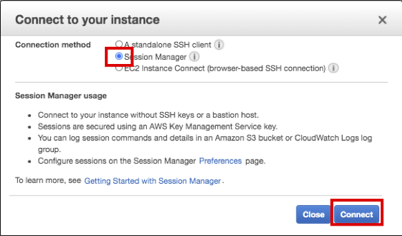

Task 01. Verify Cluster
Task 01은 HA 테스트를 진행하기 전에 클러스터가 정상 상태인지 확인합니다. 인스턴스는 Session Manager를 통해 접속할 예정입니다.
- AWS Management Console에 로그인 한 뒤 EC2 Instance Console에 접속 합니다.
- HANA-HDB-Primary 인스턴스를 선택하고, Connect 버튼을 누릅니다.
- Session Manager 를 선택하고, Connect 버튼을 누릅니다. Session Manager를 통해 prihana 인스턴스에 접속합니다. 
- SAP HANA System Replication (HSR) 상태 체크를 합니다.
- hdbnsutil -sr_state 명령어를 사용하여 상태 체크(hdbadm
유저사용) - HAP(prihana) site가 Primary 이고 HAS(sechana) site가 sync 상태인것을 확인 할 수 있습니다.
sudo su - hdbadm hdbnsutil -sr_state - HDBSettings.sh systemReplicationStatus.py 명령어를 사용하여 상태 체크(hdbadm
유저사용) - Primary node가 prihana 이고 Secondary node가 sechana 인것을 알 수 있습니다.
HDBSettings.sh systemReplicationStatus.py
- SAPHanaSR-showAttr 사용하여 sechana node가 SOK 확인 합니다.(root 유저사용)
exit
sudo su -
SAPHanaSR-showAttr
5. Cluster 설정을 확인 합니다.
- crm tool은 cluster 설정 및 관리 하는 툴입니다.
- HA 동작 방식 확인 하려면, PREFER_SITE_TAKEOVER="true” 및 AUTOMATED_REGISTER="true” 두가지 옵션을 확인 홥니다. 둘 다 true 일 경우 Takeover가 자동으로 수행 되고 Secondary로 전환된 노드가 정상일 경우 자동으로 등록된다는 의미 입니다.
- crm configure show 명령어를 사용하여 상태 체크(root 유저사용)
crm configure show
6. Cluster 상태를 확인 합니다.
- crm_mon 은 Cluster의 현재 상태를 제공하는 명령어 입니다.(root 유저사용)
- 아래 명령어를 수행하여 prihana 가 Master 상태인지 확인 합니다.
crm_mon -rfn1

© 2020, Amazon Web Services, Inc. or its affiliates. All rights reserved.